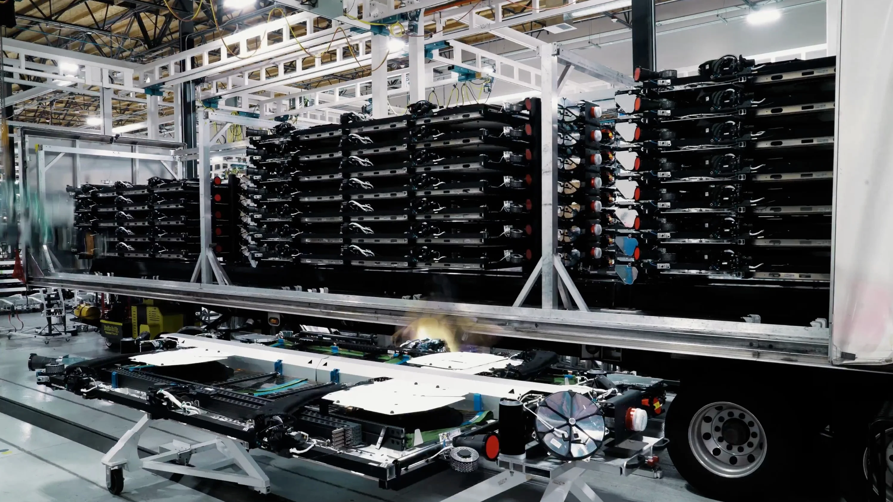
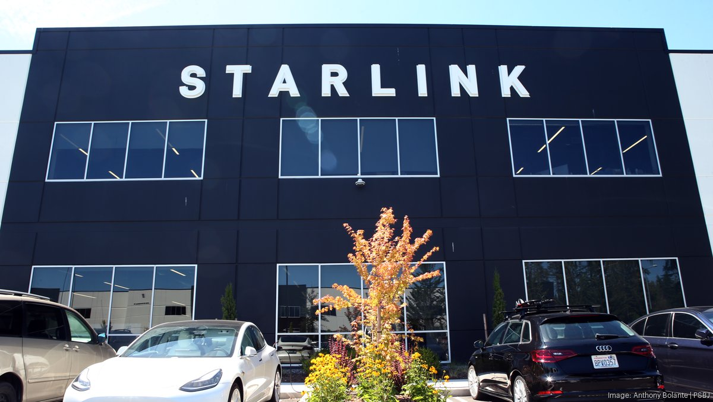

My internship at SpaceX gave me experience in rapid prototyping and project management. Specializing in the manufacturing of satellite battery packs, I designed a pneumatic fixture for precisely holding packs in position, reducing tolerances from ±1000 microns to ±20 microns.

I worked closely with internal departments to ensure the system could easily be maintained, installed, and manufactured, and I built connections with suppliers and local machine shops to reduce the expense of production while expediting the project progress. Ultimately, I completed my summer internship with a working prototype ready for integration.
